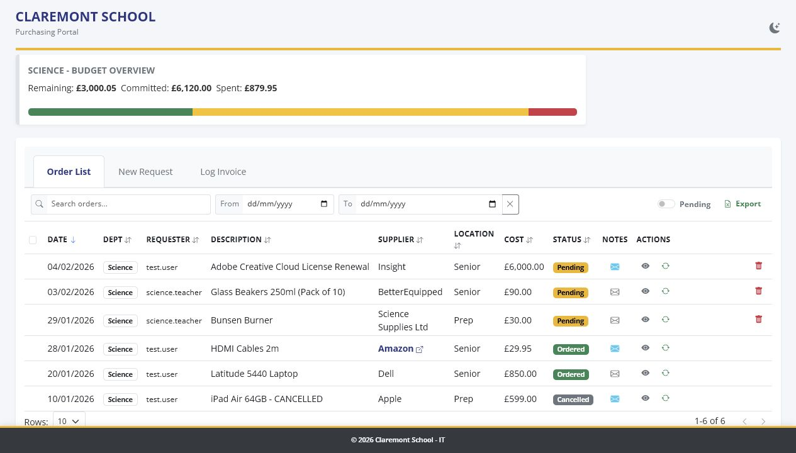
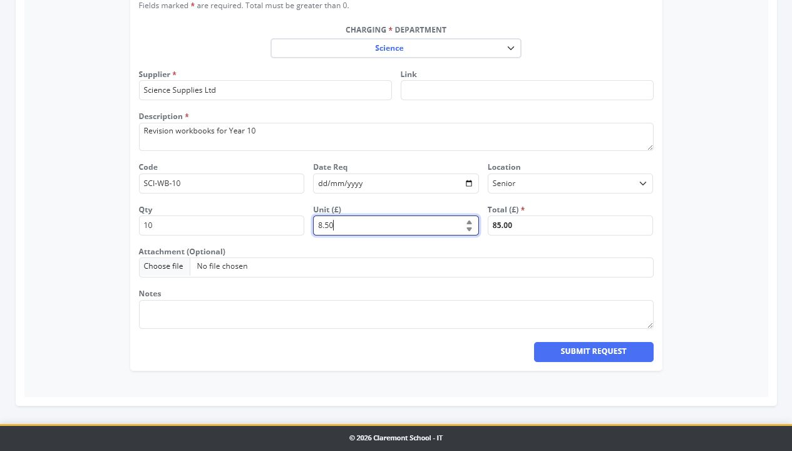
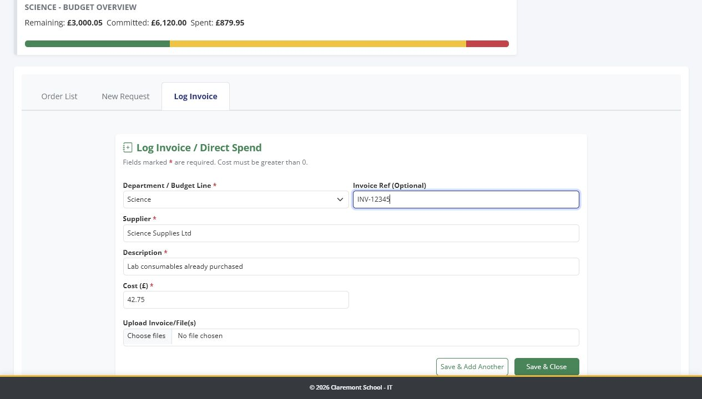
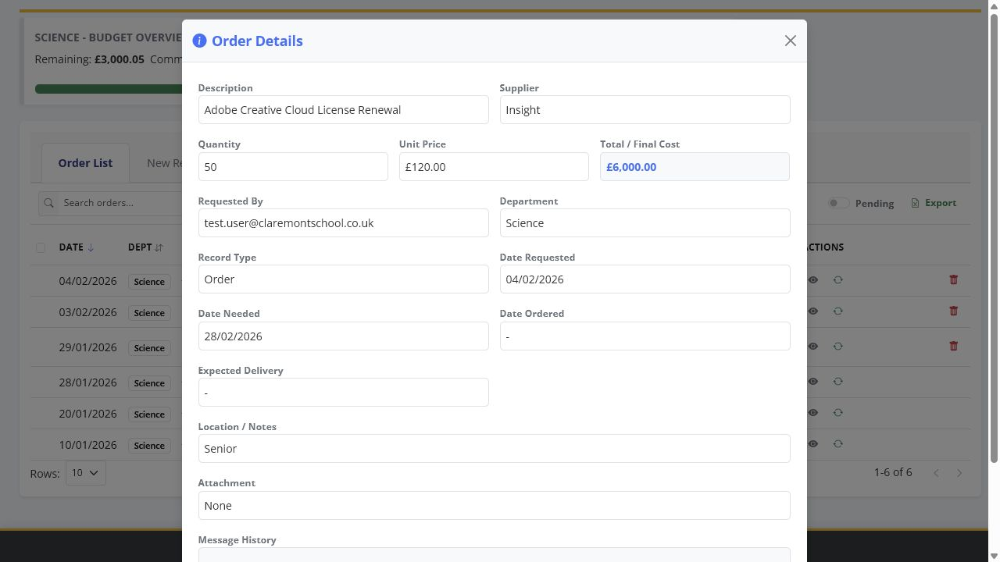
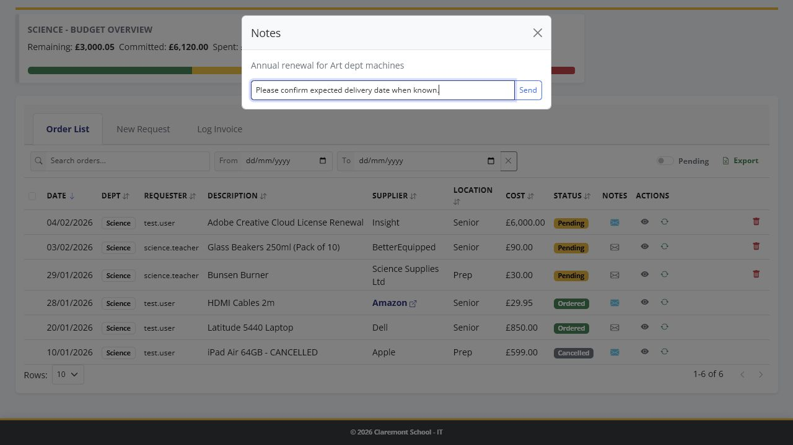
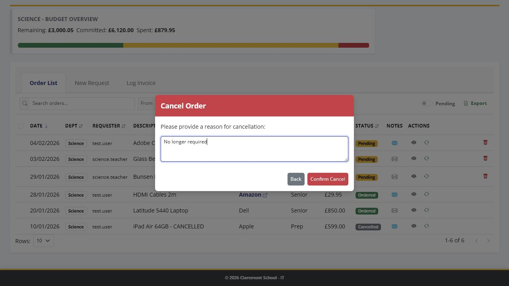

Preview note: The Orders system is not live yet. This guide shows how the Help area could support staff once the system is ready for internal use.
Orders system link
This will be replaced with the live Orders platform address when the system is ready.
https://[orders-platform-url]

Quick start
The Orders system is intended to bring order requests, direct spend and invoice logging into one place. It was built around the current orders process after discussion and testing with the Finance Department, and can be adjusted as the process changes.
When the system is available, it will show the departments you have permission to use.
- Use Order List to check existing requests and updates.
- Use New Request to ask for an item to be ordered.
- Use Log Invoice for direct spend or an invoice that needs recording.
- Use the details button to review a record and add notes.
Understanding the order list
| Status or record | What it means | What you may need to do |
|---|---|---|
| Pending | The request has been logged but has not yet been marked as ordered. | Wait for processing, add a note if more information is needed, or cancel it if it is no longer required. |
| Ordered | The order has been placed and may have an expected delivery date. | Open the details if you need delivery information or the latest update. |
| Processed invoice | An invoice or direct spend item has been recorded. | Check the details if you need to confirm what was logged. |
| Transfer | Budget has been moved between departments. | This is usually for information only. |
- Use search for supplier, description, requester, product code or notes.
- Use date filters to narrow the list.
- Use Pending only to focus on outstanding requests.
- Use Export current view if you need a copy of the filtered list.
Adding a new order request
Use New Request when you need something ordered through the normal request process.
- Open the New Request tab.
- Choose the correct department.
- Choose the delivery location.
- Enter the supplier name.
- Add a website link if it will help the person placing the order.
- Describe the item clearly, including size, colour or pack details where useful.
- Add the product code if known.
- Enter quantity and unit price. The total is calculated for you.
- Add the required-by date if there is a deadline.
- Attach a file if useful, such as a quote or screenshot.
- Add any extra notes and submit the request.
Budget warning: If the request is over the remaining budget, the system can still log it, but it is flagged for review.

Logging an invoice or direct spend
Use Log Invoice when spend needs recording but it is not a normal order request, for example a direct invoice or card purchase.
- Open the Log Invoice tab.
- Choose the department.
- Enter the supplier.
- Enter a short description of what the spend relates to.
- Enter the total cost.
- Add an invoice reference if there is one.
- Attach any invoice files or receipts.
- Choose Save & Add Another if you have more to enter, or Save & Close when finished.

Viewing details and adding notes
Viewing full details
- Find the record in the Order List.
- Select the details button.
- Review the full request, attachment link and notes history.

Adding a note
Notes are useful when you need to ask a question, add delivery information, explain a change or leave a clear update for the record.
- Open the record details.
- Type the note in the notes box.
- Save the note.

Duplicating, cancelling and good practice
Duplicating a request
- Find the original request.
- Choose duplicate.
- Check the copied details carefully.
- Change quantity, price, date or notes as needed.
- Submit it as a new request.
Cancelling a request
- Find the pending request.
- Choose cancel.
- Enter a clear cancellation reason.
- Confirm the cancellation.

Good practice
- Use clear supplier names so searches and reports are useful.
- Put enough detail in the description for someone else to place the order without guessing.
- Use product codes and website links whenever available.
- Check the calculated total before submitting.
- Use notes instead of separate messages where the comment belongs with the order.
- Cancel requests that are no longer needed so the pending list stays clean.
- Log invoices promptly so budget information stays up to date.
Common problems
| Problem | What to check |
|---|---|
| I cannot access the portal. | Check you are using the correct school account and ask for your user access to be checked. |
| I cannot see my department. | Your department permissions may need updating. |
| The form will not submit. | Check all required fields are filled in and that the cost is a valid number. |
| I attached the wrong file. | Add a note to the record or ask an Admin for help. |
| I entered the wrong details. | If the request is still pending, cancel and resubmit it, or ask an Admin to correct it. |
| I need an update. | Open the details and add a note to the record. |